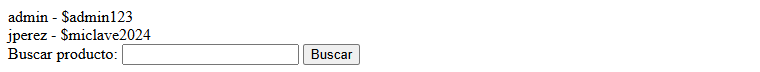
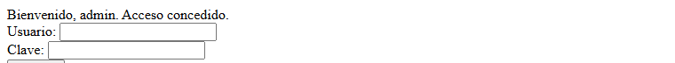
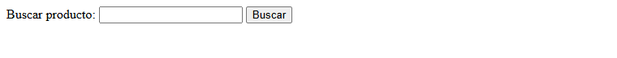
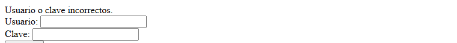
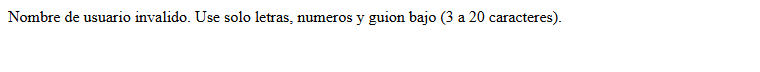
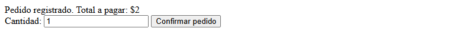
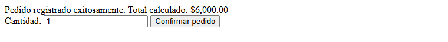

Este informe es la continuación de la Tarea 4, en la que habíamos auditado la aplicación NegocioSeguro (la misma Compra Segura que venimos usando en el curso) y habíamos reproducido en local varios ataques de inyección SQL siguiendo el OWASP Top 10. Allí dejamos el sistema diagnosticado; ahora lo que toca es la otra mitad del trabajo, que es taparle esos huecos y, sobre todo, comprobar que de verdad quedaron tapados.
La idea de fondo que seguí es la de defensa en profundidad, que básicamente es no confiar todo a una sola barrera sino poner varias capas que se respalden entre sí. Trabajé tres: darle a la aplicación un usuario de base de datos con los permisos justos (mínimo privilegio), validar lo que entra por los formularios con una lista blanca, y cambiar todas las consultas para que usen sentencias preparadas con parámetros en vez de pegar el texto del usuario dentro del SQL. El marco de referencia sigue siendo el OWASP Top 10:2021, en particular la categoría A03 (Inyección), y para la parte de buenas prácticas de seguridad me apoyo en ISO/IEC 27002.
El documento está organizado como pide la plantilla: primero los objetivos y la justificación, luego el desarrollo, que es la parte larga y donde va el grueso del trabajo (el estado inicial, las cinco correcciones archivo por archivo, la matriz de verificación y el análisis), después la discusión y las conclusiones, y al final la bibliografía y los anexos con el código completo. Una aclaración importante: todo esto se hizo en un entorno de pruebas local (XAMPP), sobre una aplicación hecha a propósito para ser insegura, así que no hay ningún riesgo ni dato real de por medio.
Implementar y verificar, en un entorno local controlado, una estrategia de defensa en profundidad contra la inyección SQL en la aplicación NegocioSeguro, de modo que los vectores de inyección identificados en la Clase 6 queden neutralizados y comprobados con pruebas reproducibles.
NegocioSeguro maneja justo lo que un atacante querría: las credenciales de los usuarios y los datos de los pedidos. En la Tarea 4 demostramos que con una sola línea escrita en el buscador se podían sacar todas las contraseñas, y que el precio de un pedido se podía cambiar desde el navegador. Diagnosticar eso ya está hecho; lo que da valor ahora es cerrarlo y, más importante todavía, no quedarnos en el «ya lo corregí» sino probar que el ataque efectivamente dejó de funcionar.
Elegí el marco OWASP porque la A03 (Inyección) es exactamente el fallo que tiene la aplicación, y lo complementé con la lógica de mínimo privilegio de ISO/IEC 27002, que es la idea de no darle a un componente más permisos de los que necesita. Trabajarlo en local, sobre una app vulnerable a propósito, deja ver el daño real y a la vez comprobar la corrección sin poner en riesgo a nadie, que es para lo que sirve el ejercicio.
El alcance son los cinco archivos de NegocioSeguro y los seis payloads de la matriz de la guía. Lo que queda fuera (otras categorías del OWASP, el cifrado de contraseñas, etc.) lo dejo anotado en la sección 4.6.
La metodología sigue una regla que la propia guía recalca: implementar no es lo mismo que verificar. No basta con decir «cambié login.php a consulta preparada, entonces ya no es vulnerable». Lo que hice fue, para cada punto, primero confirmar que el ataque funcionaba en el estado original (línea base), después aplicar la corrección, y por último repetir el mismo payload sobre el código ya corregido y anotar la respuesta exacta del sistema, sin idealizarla. Solo cuando esa prueba repetida sale como se espera, marco la fila como verificada.
Las pruebas se hicieron de dos formas, para poder dejar evidencia clara: por un lado contra la copia original (carpeta compraseguras_backup) para capturar el «antes», y por otro contra la aplicación ya corregida para el «después». Todas las figuras de este informe salen de ese ejercicio real.
| Fecha y hora de la verificación | 20 de octubre de 2026, entorno local de desarrollo. |
| Estado de los servicios XAMPP | Apache (puerto 8080) y MySQL/MariaDB 10.4.32 activos y funcionando. |
| Método de respaldo | Dos respaldos independientes: (1) una copia completa de la carpeta del proyecto renombrada como compraseguras_backup, y (2) una etiqueta de Git antes-producto2 sobre el commit previo a los cambios, en el repositorio pabloWIB/CompraSegura. |
| Ubicación del respaldo | C:\xampp\htdocs\compraseguras_backup y la etiqueta antes-producto2 en el historial de Git. |
| Estado inicial confirmado | Antes de tocar nada, repetí los payloads sobre la copia original y todos seguían funcionando: el login se saltaba con la tautología, el buscador soltaba las credenciales por UNION y el error de extractvalue mostraba la versión del motor (~10.4.32-MariaDB), y el pedido aceptaba un precio puesto por el cliente. Esto fija la línea base de comparación. |
La base compraseguras tiene las tres tablas de siempre (usuarios, productos, pedidos) con sus datos de ejemplo. Aclaro un detalle de nombres: la guía habla de la base «negocioseguro», pero en nuestro proyecto la base se llama compraseguras (es la misma app), así que todos los comandos y cadenas de conexión usan ese nombre real; el usuario restringido sí lo dejé como pide la guía, negocioseguro_app.
Lo que sigue es, archivo por archivo, qué se corrigió y con qué prueba lo confirmé. Las capas no van por separado: varias se combinan en un mismo archivo.
| Objetivo de seguridad | Que, aunque una inyección llegara a ejecutarse, la cuenta de base de datos de la app no tuviera permiso para hacer daño mayor (borrar o alterar tablas). |
| Problema mitigado | La app se conectaba como root, que puede todo sobre el motor MySQL (A05, configuración incorrecta). Cualquier inyección exitosa heredaba esos permisos. |
| Cambio implementado | Creé el usuario negocioseguro_app con GRANT SELECT, INSERT, UPDATE ON compraseguras.* (sin DROP, ALTER ni DELETE) y cambié conexion.php para conectar con él. Además, el mensaje de error de conexión ya no muestra el detalle técnico. |
| Prueba realizada | Con el usuario nuevo intenté DROP TABLE compraseguras.productos; directamente en el motor. |
| Resultado observado | ERROR 1142 (42000): DROP command denied to user 'negocioseguro_app'@'localhost'. En cambio un SELECT legítimo sí responde, así que la app sigue funcionando. |
| Análisis | Esta capa no evita la inyección, la contiene: reduce el daño posible. Es la última red de seguridad, no la primera. |
| Objetivo de seguridad | Rechazar entradas con caracteres peligrosos antes de que lleguen a la base de datos, y de todos modos insertar de forma parametrizada. |
| Problema mitigado | El INSERT concatenaba $_POST['usuario'] y $_POST['clave'], así que una comilla ya rompía la consulta (A03). |
| Cambio implementado | Validación por lista blanca con preg_match('/^[a-zA-Z0-9_]{3,20}$/', $usuario), longitud mínima de clave, y el INSERT con prepare() + bind_param("ss", ...). |
| Prueba realizada | Registrar el usuario admin'--. |
| Resultado observado | «Nombre de usuario invalido. Use solo letras, numeros y guion bajo (3 a 20 caracteres).» La solicitud se corta antes de tocar la base de datos (ver Figura 7). |
| Análisis | Aquí actúan dos capas: la lista blanca frena el valor de entrada y, si algo pasara, la consulta preparada lo trataría como dato. No cubre la contraseña en texto plano, que es otra entrega. |
| Objetivo de seguridad | Que el login no se pueda saltar con una inyección y que la clave no se compare dentro del SQL. |
| Problema mitigado | La consulta ... WHERE usuario = '$usuario' AND clave = '$clave' permitía el bypass por tautología y la extracción ciega booleana (A03, A07). |
| Cambio implementado | Consulta preparada que busca solo por usuario (WHERE usuario = ?), y la clave se compara después en PHP. La salida del nombre va con htmlspecialchars(). |
| Prueba realizada | El bypass clásico ' OR '1'='1 y la extracción ciega admin' AND SUBSTRING(clave,1,1)='a' -- -. |
| Resultado observado | En los dos casos: «Usuario o clave incorrectos.» El motor busca un usuario cuyo texto literal sea ese payload, y como no existe, no deja entrar (Figuras 4 y 6). |
| Análisis | La consulta preparada corta la inyección de raíz. Separar la verificación de la clave en PHP prepara además el terreno para cifrarla (próxima entrega). |
| Objetivo de seguridad | Que el buscador no deje leer otras tablas ni suelte información del motor por mensajes de error. |
| Problema mitigado | ... WHERE nombre LIKE '%$busqueda%' permitía inyección basada en error (extractvalue) y por UNION (A03). |
| Cambio implementado | Reescrito con PDO, parámetro nombrado :busqueda (el % va en el valor, no en el SQL), ERRMODE_EXCEPTION y un catch que muestra un mensaje genérico. La conexión PDO también usa el usuario restringido. |
| Prueba realizada | ' AND extractvalue(1,concat(0x7e,(SELECT version()))) -- - y inexistente' UNION SELECT id, usuario, clave, 'robado' FROM usuarios -- -. |
| Resultado observado | Ninguno de los dos devuelve datos ni errores: la búsqueda queda vacía porque el payload se busca como texto literal (Figuras 2 y 5). Ya no aparecen «admin - $admin123» ni la versión del motor. |
| Análisis | La consulta preparada neutraliza las dos variantes a la vez; suprimir el detalle de la excepción cierra además la fuga de información por errores. |
| Objetivo de seguridad | Cerrar a la vez la inyección del INSERT y el fraude del precio, y exigir sesión. |
| Problema mitigado | El INSERT concatenaba los datos (A03), el precio venía de un campo oculto del formulario (A04/A08) y se aceptaban pedidos sin sesión (A01). |
| Cambio implementado | Exige $_SESSION['usuario_id']; valida con filter_var(..., FILTER_VALIDATE_INT); reconsulta el precio en la base por el id del producto (no lo toma del POST); e inserta con consulta preparada bind_param("iiid", ...). |
| Prueba realizada | Pedido del producto 1 (precio real $3.000) con el precio manipulado a 1 y cantidad 2; un producto_id no entero; y un pedido sin iniciar sesión. |
| Resultado observado | Total calculado real $6.000,00, ignorando el precio enviado (Figura 9). El id no entero da «Los datos del pedido son invalidos» y sin sesión da «Debe iniciar sesion para realizar un pedido». |
| Análisis | Es el caso donde se ve claro que la consulta preparada sola no basta: el fraude del precio es un fallo de diseño que se cierra con la reconsulta en el servidor, una medida distinta. |








La matriz reúne los seis puntos de la guía: el payload de la Clase 6, si funcionaba antes y si funciona ahora, la capa que lo neutralizó, el resultado observado sobre el código ya corregido y la evidencia.
| # | Archivo | Payload (Clase 6) | Capa(s) de defensa que lo neutralizó | ¿Antes? | ¿Ahora? | Resultado observado (corregido) | Evidencia | Estado |
|---|---|---|---|---|---|---|---|---|
| 1 | login.php | ' OR '1'='1 | Consulta preparada (MySQLi) | Sí | No | «Usuario o clave incorrectos.» | Fig. 3 y 4 | Verificado / Exitoso |
| 2 | buscar_producto.php | ' AND extractvalue(1,concat(0x7e,(SELECT version()))) -- - | Consulta preparada (PDO) + supresión de excepciones | Sí | No | Sin error en pantalla; no se filtra la versión; búsqueda vacía. | Fig. 5 | Verificado / Exitoso |
| 3 | buscar_producto.php | inexistente' UNION SELECT id, usuario, clave, 'robado' FROM usuarios -- - | Consulta preparada (PDO) | Sí | No | No se listan usuarios ni claves; búsqueda vacía. | Fig. 1 y 2 | Verificado / Exitoso |
| 4 | login.php | admin' AND SUBSTRING(clave,1,1)='a' -- - | Consulta preparada (MySQLi) | Sí | No | «Usuario o clave incorrectos.» No cambia según la condición. | Fig. 6 | Verificado / Exitoso |
| 5 | registro.php | admin'-- | Validación por lista blanca (preg_match) + consulta preparada | Sí | No | «Nombre de usuario invalido…» Se corta antes de la base de datos. | Fig. 7 | Verificado / Exitoso |
| 6 | pedido.php | Inyección en el id / manipulación del precio | Validación de tipo (filter_var) + reconsulta del precio + consulta preparada + exigir sesión | Sí | No | Precio manipulado ignorado (total real $6.000); id no entero y pedido sin sesión rechazados. | Fig. 8 y 9 | Verificado / Exitoso |
Los seis quedan en «No» en la columna «¿Funciona ahora?», cada uno con su prueba repetida y su evidencia.
Las tres capas no son lo mismo repetido tres veces, cubren momentos distintos del ataque. La validación por lista blanca actúa en la entrada: filtra el dato apenas llega, antes de que toque la base. La consulta preparada actúa en el acceso a datos: aunque pase un valor raro, la base lo trata como dato y nunca como parte de la orden SQL. Y el mínimo privilegio actúa en el daño: si por algún hueco que no vimos una inyección llegara a ejecutarse, la cuenta de la app no podría borrar ni alterar tablas.
Por eso se complementan y no sobran. Si solo tuviera la lista blanca, un caso de entrada que no previ podría colarse. Si solo tuviera la consulta preparada, estaría bien contra la inyección pero seguiría corriendo como root, y cualquier otro fallo tendría permisos de más. Si solo tuviera el mínimo privilegio, la inyección seguiría funcionando, solo que haría «menos» daño. Juntas, para que un ataque prospere tendría que romper las tres a la vez, que es justo lo que se busca.
Este ejercicio no deja el sistema «ya seguro del todo», y conviene decirlo claro:
password_hash/password_verify en una entrega posterior, no en esta.cantidad comprueba el tipo pero no un límite de negocio; un valor enorme es aceptado y provoca un problema aparte.En pedido.php se juntaban dos fallos de naturaleza distinta y la refactorización los cerró con dos medidas distintas aplicadas en el mismo archivo. El primero es la inyección SQL: el INSERT pegaba producto_id y cantidad dentro de la consulta, y eso se cierra con la consulta preparada (bind_param), que manda esos valores como datos y no como parte del SQL. El segundo es un fallo de integridad que ya veníamos arrastrando desde la Clase 2: el precio venía de un campo oculto del formulario, así que el cliente podía ponerlo en 1 y pagar lo que quisiera. Ese no lo arregla ninguna consulta preparada, porque el dato viajaba «bien formado», el problema era confiar en él. Se cierra con una medida de diseño: ya no se lee el precio del POST, se vuelve a consultar en la base por el id del producto, que es la única fuente confiable. La prueba lo confirma: mandando precio 1 y cantidad 2 sobre un producto de $3.000, el sistema cobró $6.000 (el valor real), no $2. O sea, un mismo refactor tapó una inyección (confidencialidad/integridad del SQL) y un fraude de precio (integridad de negocio), pero con herramientas diferentes para cada uno.
Si tuviera que quedarme con una sola, elegiría las consultas preparadas. La razón técnica es que atacan la causa de raíz del problema, que es mezclar el código con los datos. Una consulta preparada separa de forma estructural la orden SQL de los valores, entonces neutraliza cualquier variante de inyección (tautología, UNION, basada en error, ciega) sin importar qué escriba el usuario, y lo hace en todos los campos de esa consulta de una vez. La validación por lista blanca es muy útil, pero es por campo y depende de que uno haya previsto bien el patrón; si un caso se escapa del filtro, pasa. Y el mínimo privilegio no previene la inyección, solo limita el daño cuando ya ocurrió. Dicho de otra forma: las consultas preparadas son prevención amplia, la lista blanca es prevención puntual y el mínimo privilegio es contención. Si solo puedo pagar una barrera, me quedo con la que de verdad impide que el ataque funcione, no con la que lo suaviza.
Lo probé de verdad para no responder de memoria. Si en cantidad se manda 999999999, la consulta preparada no evita la transacción, y tiene sentido: 999999999 es un entero válido, así que pasa el filter_var(FILTER_VALIDATE_INT) sin problema. Las consultas preparadas protegen contra inyección, no contra datos absurdos pero bien tipados. El pedido se registró, y ahí apareció un problema real: PHP calculó un total de $2.999.999.997.000, pero la columna total es DECIMAL(10,2), que como máximo guarda 99.999.999,99. Como el sql_mode de este MariaDB no es estricto, la base no dio error: truncó el valor en silencio y guardó 99.999.999,99, un número que no coincide con lo que se le mostró al usuario. O sea, el daño no es de seguridad en el sentido de inyección, es de integridad y de negocio: un pedido sin sentido, un total mal guardado y una posible venta de un stock que no existe. Se corrige con una regla de negocio: validar un rango razonable de cantidad (por ejemplo entre 1 y un máximo, o contra el stock disponible del producto) y asegurarse de que el total quepa en la columna; además conviene activar el modo estricto de la base para que un desborde falle en vez de truncarse calladamente.
Mirando los resultados en conjunto, lo primero que salta es que las cinco inyecciones venían del mismo error (pegar lo que escribe el usuario dentro del SQL) y que una sola práctica, las consultas preparadas, las cerró todas. Eso ordena las prioridades: antes de ponerse con controles finos, lo que más rinde es parametrizar todas las consultas, porque de un golpe tapa los cinco vectores.
Lo segundo es que no todo es consulta preparada. pedido.php lo deja claro: el fraude del precio y la posibilidad de pedir sin sesión son fallos de diseño, y la cantidad gigante de la pregunta 3 es un fallo de reglas de negocio. Ninguno de esos lo arregla la parametrización; hacen falta controles aparte (reconsultar el precio, exigir sesión, validar rangos). Por eso la defensa en profundidad tiene sentido: cada capa cubre algo que las otras no.
Si alguien objetara que con las consultas preparadas ya estaría todo, la respuesta está en la propia matriz y en la pregunta 3: la inyección sí quedó cerrada y verificada, pero el total truncado demuestra que quedan problemas que la parametrización no toca. Reconocerlo es parte del trabajo; declarar «ya es seguro» sería justo el tipo de conclusión exagerada que la guía pide evitar.
negocioseguro_app no puede ejecutar DROP, pero la app sigue operando con SELECT/INSERT/UPDATE, que es justo lo que necesita.International Organization for Standardization. (2013). ISO/IEC 27002:2013. Information technology, Security techniques, Code of practice for information security controls. ISO.
OWASP Foundation. (s.f.). OWASP Top 10. Recuperado el 20 de octubre de 2026 de https://owasp.org/www-project-top-ten/
OWASP Foundation. (s.f.). SQL Injection Prevention Cheat Sheet. Recuperado el 20 de octubre de 2026 de https://cheatsheetseries.owasp.org/cheatsheets/SQL_Injection_Prevention_Cheat_Sheet.html
The PHP Group. (s.f.). Sentencias preparadas con MySQLi. Manual de PHP. Recuperado el 20 de octubre de 2026 de https://www.php.net/manual/es/mysqli.quickstart.prepared-statements.php
The PHP Group. (s.f.). PDO::prepare. Manual de PHP. Recuperado el 20 de octubre de 2026 de https://www.php.net/manual/es/pdo.prepare.php
Anexo A. Evidencias complementarias. Las nueve figuras del informe salen de las pruebas reales ejecutadas el 20/10/2026; las imágenes a resolución completa quedan en la carpeta tareas/producto2-imagenes/ del repositorio, organizadas por componente (prefijo antes- y despues-).
Anexo B. Resumen de los cambios por archivo. conexion.php: usuario restringido en vez de root. registro.php: lista blanca + INSERT preparado. login.php: SELECT preparado por usuario y verificación de clave en PHP. buscar_producto.php: PDO con parámetro nombrado y manejo de excepciones. pedido.php: validación de tipo, reconsulta del precio y INSERT preparado.
Anexo C. Código completo de los cinco archivos refactorizados. Se entregan también comprimidos en el ZIP de la actividad.
<?php
// Capa 1 - Minimo privilegio: la app ya no se conecta como root.
// Se usa el usuario 'negocioseguro_app', que solo tiene SELECT, INSERT y UPDATE
// sobre la base compraseguras (no puede DROP, ALTER ni DELETE).
if (session_status() === PHP_SESSION_NONE) {
session_start();
}
$host = "localhost";
$user = "negocioseguro_app";
$pass = "ClaveSegura123!";
$db = "compraseguras";
$conn = new mysqli($host, $user, $pass, $db);
if ($conn->connect_error) {
// No se muestra el detalle tecnico al usuario (eso seria A05/A09).
die("Error critico de conexion a la base de datos.");
}
?>
<?php
include 'conexion.php';
if ($_SERVER['REQUEST_METHOD'] === 'POST') {
$usuario = trim($_POST['usuario']); // quita espacios al inicio/final
$clave = $_POST['clave'];
// Capa 2 - Validacion por lista blanca: solo letras, numeros y guion bajo,
// entre 3 y 20 caracteres. Un valor como admin'-- se rechaza aqui mismo,
// antes de tocar la base de datos.
if (!preg_match('/^[a-zA-Z0-9_]{3,20}$/', $usuario)) {
die("Nombre de usuario invalido. Use solo letras, numeros y guion bajo (3 a 20 caracteres).");
}
// Politica de longitud minima de la clave (Clase 5).
if (strlen($clave) < 8) {
die("La clave debe tener al menos 8 caracteres.");
}
// Capa 3 - Consulta preparada con MySQLi: los datos van por marcadores (?),
// nunca concatenados dentro del SQL.
$stmt = $conn->prepare("INSERT INTO usuarios (usuario, clave) VALUES (?, ?)");
$stmt->bind_param("ss", $usuario, $clave);
if ($stmt->execute()) {
echo "Usuario registrado con exito.";
} else {
echo "No se pudo registrar el usuario.";
}
$stmt->close();
}
?>
<form method="POST">
Nuevo usuario: <input type="text" name="usuario"><br>
Clave: <input type="password" name="clave"><br>
<button type="submit">Registrarme</button>
</form>
<?php
include 'conexion.php';
if ($_SERVER['REQUEST_METHOD'] === 'POST') {
$usuario = $_POST['usuario'];
$clave = $_POST['clave'];
// Capa 3 - Consulta preparada con MySQLi. Solo se consulta por el usuario,
// nunca por la clave; la verificacion de la clave se hace despues en PHP.
// Asi un texto como ' OR '1'='1 se busca como un nombre de usuario literal.
$stmt = $conn->prepare("SELECT * FROM usuarios WHERE usuario = ?");
$stmt->bind_param("s", $usuario);
$stmt->execute();
$resultado = $stmt->get_result();
if ($resultado && $resultado->num_rows > 0) {
$fila = $resultado->fetch_assoc();
if ($clave === $fila['clave']) {
$_SESSION['usuario_id'] = $fila['id'];
$_SESSION['usuario'] = $fila['usuario'];
// htmlspecialchars al imprimir el nombre, para no dar pie a XSS.
echo "Bienvenido, " . htmlspecialchars($fila['usuario']) . ". Acceso concedido.";
} else {
echo "Usuario o clave incorrectos.";
}
} else {
echo "Usuario o clave incorrectos.";
}
$stmt->close();
}
?>
<form method="POST">
Usuario: <input type="text" name="usuario"><br>
Clave: <input type="password" name="clave"><br>
<button type="submit">Ingresar</button>
</form>
<?php
session_start();
$busqueda = isset($_GET['q']) ? trim($_GET['q']) : '';
if ($busqueda !== '') {
try {
// Capa 3 con PDO. Se conecta con el usuario restringido de la Capa 1
// (no con root) y se activan las excepciones para manejarlas nosotros.
$pdo = new PDO(
"mysql:host=localhost;dbname=compraseguras;charset=utf8mb4",
"negocioseguro_app",
"ClaveSegura123!"
);
$pdo->setAttribute(PDO::ATTR_ERRMODE, PDO::ERRMODE_EXCEPTION);
// Marcador de posicion con nombre. El % se agrega en el valor, no en el SQL.
$stmt = $pdo->prepare("SELECT nombre, precio FROM productos WHERE nombre LIKE :busqueda");
$stmt->bindValue(':busqueda', '%' . $busqueda . '%');
$stmt->execute();
while ($fila = $stmt->fetch(PDO::FETCH_ASSOC)) {
echo htmlspecialchars($fila['nombre']) . " - $" . htmlspecialchars($fila['precio']) . "<br>";
}
} catch (PDOException $e) {
// Nunca mostrar $e->getMessage() al usuario: eso reabriria la inyeccion
// basada en errores de la Clase 6.
echo "Ocurrio un error al procesar la busqueda. Intente nuevamente.";
}
}
?>
<form method="GET">
Buscar producto: <input type="text" name="q">
<button type="submit">Buscar</button>
</form>
<?php
include 'conexion.php';
if ($_SERVER['REQUEST_METHOD'] === 'POST') {
$producto_id = $_POST['producto_id'] ?? '';
$cantidad = $_POST['cantidad'] ?? '';
$usuario_id = $_SESSION['usuario_id'] ?? 0;
// Exige sesion iniciada (cierra el pedido con usuario 0, A01).
if ($usuario_id === 0) {
die("Error: Debe iniciar sesion para realizar un pedido.");
}
// Validacion de tipo: producto_id y cantidad deben ser enteros positivos.
if (!filter_var($producto_id, FILTER_VALIDATE_INT) ||
!filter_var($cantidad, FILTER_VALIDATE_INT) ||
$cantidad <= 0) {
die("Error: Los datos del pedido son invalidos.");
}
// Defensivo: el precio NUNCA se toma del formulario. Se reconsulta en la BD
// por el id del producto, con consulta preparada.
$stmt_precio = $conn->prepare("SELECT precio FROM productos WHERE id = ?");
$stmt_precio->bind_param("i", $producto_id);
$stmt_precio->execute();
$res_precio = $stmt_precio->get_result();
if ($res_precio->num_rows === 0) {
die("Error: El producto seleccionado no existe.");
}
$producto = $res_precio->fetch_assoc();
$precio_real = $producto['precio'];
$total = $precio_real * $cantidad;
$stmt_precio->close();
// Registro del pedido con consulta preparada.
$stmt_pedido = $conn->prepare("INSERT INTO pedidos (usuario_id, producto_id, cantidad, total) VALUES (?, ?, ?, ?)");
$stmt_pedido->bind_param("iiid", $usuario_id, $producto_id, $cantidad, $total);
if ($stmt_pedido->execute()) {
echo "Pedido registrado exitosamente. Total calculado: $" . number_format($total, 2);
} else {
echo "Error al registrar el pedido.";
}
$stmt_pedido->close();
}
?>
<form method="POST">
<input type="hidden" name="producto_id" value="1">
<input type="hidden" name="precio" value="3000">
Cantidad: <input type="number" name="cantidad" value="1">
<button type="submit">Confirmar pedido</button>
</form>